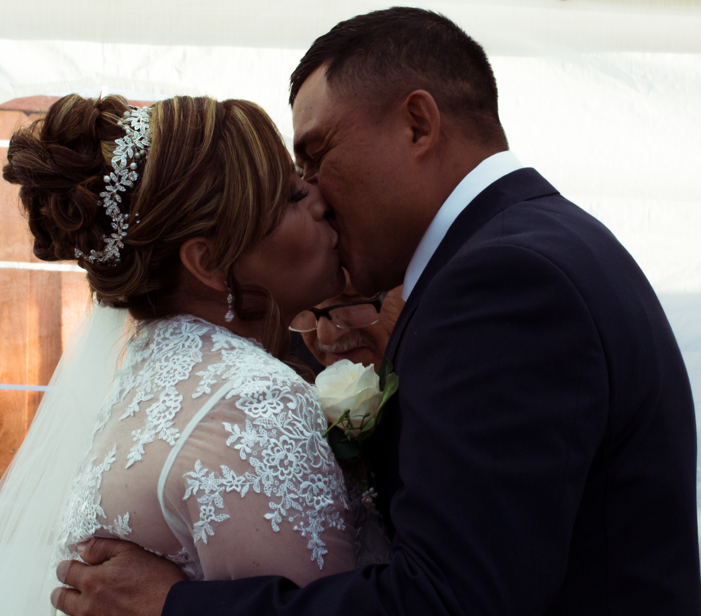
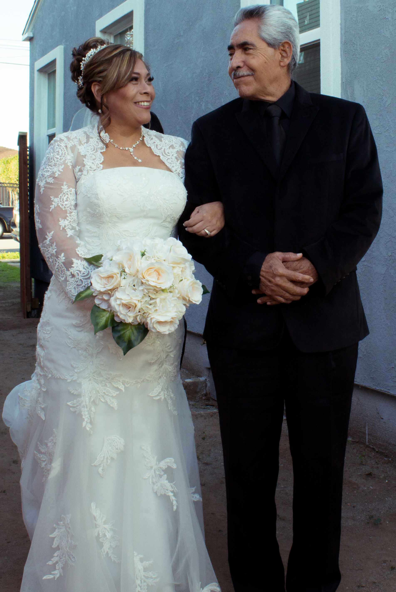

Apocalypse
This photo represents apocalypse, the color of the sky, orange and red. Like an imminent doom. The wire lines, the palm tree, in a neighborhood. It could happen anywhere. Take a moment to look at the photo and take it in.

Monarch Butterfly
A beautiful butterfly, a Monarch Butterfly on top of some beautiful flowers. A true represenation of the beauty of nature, what we have around us. Take a look around next time you walk about anywhere, take in this life. What is around you. Live in the moment.

Chaos & Order
The fence, represents Chaos. The cut up part, is peeling off the mask of your own evil. Being able to be honest with yourself, being able to know your limits. How far your evil is willing to go. And as you do that, and accept who you are. You are getting close to that light. Heaven. Your life in Order.

Blue Mood
A blue moody sky, I took this photo on the freeway as we got stranded because the truck we where in decided to break down. And we had to call a tow truck. 'Twas a rainy day as well.

Sacrifice
This photo was taken in Balboa Park. This photo represents sacrifice.Never giving up on your dreams. Who you are destined to become, yet at the same time could fall into the misdeed of walking into a different path.

Golden Sun
A golden sky, with the golden Sun. It is the soul in all of us shining out, radiant and blinding. Infinite.

Everyday Sacrifice
This photo was such a beautiful moment that shows community and strong work ethic from the people in Tijuana, Mexico. This Marketplace has such a diverse range of things to buy and look for. From pinatas, candies that are so good and unique, delicious food, wonderful people, and so much more. A place to explore. Despite Mexico getting a bad reputation, when you're there firsthand and get to experience and take in that beautiful place and it's unique beautiful places. Culture. It's one of a kind. God bless Mexico.
![A electricity box in downtown, with a mysterious face painting. Eyes black, nose black, and mouth open. The paint running down on the eyes, nose, and mouth. The facial structure being the electricity box. Looks like a skeleton, back of the photo overlapping, there is a construction sign that has been abandoned. No Parking Two Away AM to PM with the times crossed out. However, on saturday there is an X. Overlapping to the construction sign there is a lock. Upside down so you don't have to reach down to open it. The meaning of this photo is death and time.](IMG_2183.jpg)
Death
A face in the electricity box, the abandoned construction signs. All have a meaning you might not see, just like you avoid it as well. The face is representing death. Anywhere, at any time. Hence the construction sign, AM to PM. An X marks the spot. The lock is being mortal. Not immortal. You can not unlock immortality.

Darkness to the Light
A tree, from a childs perspective. Black and white, dark colors. Forming up to the light. The sun. Besides towers, representing materialism. The darkness to the light, meaning, lost and found. Chaos and Order. You.

Meaning
I really like this photo, because it shows how nature is more prominent even when a huge building (behind in the background blur) is so much bigger. Meaning in the things that we see, nature is one of those things that have everlasting meaning. The red color of the flowers, and the purple color of the tiny flowers growing on the body. Nature is so beautiful, and rich. It towers over that building in simple brilliance.

Creation
A beautiful critter. Creation infront of you. Starring back at you. It took me many tries to capture this shot or to even get close. The squirrel was curious.

Heavenly
The sun shining through the clouds, emitting and powerful. A beautiful sight.

3 Palm Trees
I was in my home one evening, and it was getting dark. I saw the colors in the sky from the crack of my window. I went out and about, to capture this beautiful shot.
![A sky, neon in the bottom, turning blue at the top middle section. Shading of different colors. Blue neon and greenish tint. A clouds the shape of a Z, or anything your mind could imagine. Almost looks like a girl running on a cloud. Clouds under it like a train has smoke coming out from the top. Tiny clouds under the main cloud. Under the main cloud, there is a mountain, far away, so far. And clouds behind it. Very huge and curvy and lots of shapes. Clouds the color yellow, a warm yellow gold. Warm like fire. The mountains have a purple tint. A touch of purple. And you can see the mist far away, so far in the clouds. Yet I was near a school. The school sign in the photo. Cars driving by. A crosswalk sign because it is a school. Rainbow clouds.](IMG_1909.jpg)
Rainbow Clouds
My cousin and I were walking about, and he mentioned how the cloud looked like a X. What does it look like to you?
![A staircase, entrapped with bars around it. You have to go to this gate to go down the stairs. The stairs made of metal with brail marking. Metal bars to hold yourself while going down the stairs. The color of the surroundings and the stairs are blood red. With a tint of orange, a tiny tint. The stairs lead to this dark space, you cannot even see in the photo. It is very dark. A mystery. The photo represents choices, will you come up from the darkness? Or will you go where you are so comfortable. In sin, chaos. Or fight your way to the gate, representing Heaven and God. Jesus Christ. Will you fight till the end? Or live in your sin?](IMG_2067.jpg)
Choices
What path will you take in life? Succumb? Or will you fight and fight until you reach the gate, Heaven. Will you set your life in Order? Or live in Chaos?

Purple Tears
This shot was taken one afternoon, I was gathering footage for a video.I liked the way the sky was looking that afternoon, I took a shot without noticing the bird at the top-left on top of the lamppost. I noticed it until after. I guess birds love photography.

Think Twice
I saw this man selling merchandise as we where crossing the border back to San Diego, CA. It's beautiful and meaningful because it seems like he was looking at the flags. What we on the other side, call freedom. Political views aside, it sucks seeing someone struggle and having to live that way. Not even making half of what we do.

Gods Light
I was walking in Downtown after a long day of no good photos. It was until I walked by this lightpost (that is what I think a solar powered light?), and saw that the sun reflection made it change colors when reflecting on it. I also met another photographer there! By the name of Omar, who walked by as I discovered this. And shared it with him so he can take a photo too! Wonderful day. Never give up, something will show up.
![A sculpture of a man, large nose, small eyes, tiny forehead, small lips. Curly hair, with a bandana in his curly hair. Face shaped, oval. With a neckbrace, seemingly looking like he's trapped. Not the neckbrace you get from the doctor, a metal one, kind of like a pillory. With a ball in the bottom. The neckbrace with a ball. Kind of like the ones people have at their doors. You grab it and bang it. Shaped like a U. And flowers at the top of the sculpture. Flowing, the photo black and white. Greyish tone. The flowers are fading, they have a fading effect to them. Because of the shutter speed used to take this photo. It represents time. As it fades away. Trapped in it. But still moving forward.](IMG_2106.jpg)
Time Passing By
I took this shot with the hopes of capturing the flowers moving. And the sculpture of the man stuck and chained by his neck. The flowers moving represent time, and the sculpture is you.

My Mother's Wedding
God gifted me with the privilege of capturing my Mom's wedding. It was a beautiful day I will never forget. Memories that will never fade.

My Mother and her Father
Pure joy in their faces, as my Grandpa let's go of his daughter. A very beautiful moment. I am still so thankful I got to photograph the wedding. Thank you God.

Emotion
My Mother's Husband, Leonel, and his Mother. A very strong and touching moment.